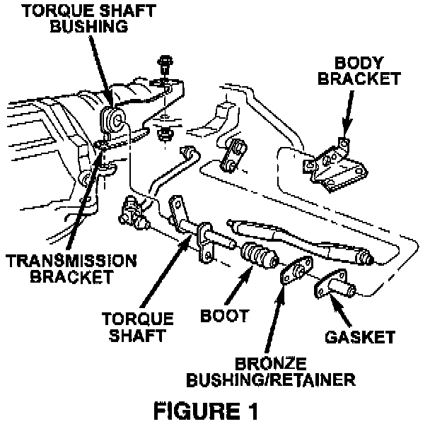

Transfer Case Shifter - Creaking/Thumping Noise
NO: 21-09-98GROUP: Transmission
DATE: Jul. 31, 1998
SUBJECT:
Transfer Case Shifter Noise
THIS BULLETIN SUPERSEDES TECHNICAL SERVICE BULLETIN NUMBER 21-02-97 REV. A, DATED, JULY 11, 1997, WHICH SHOULD BE REMOVED FROM YOUR FILE AND NOTE IN THE 1997 BOUND TECHNICAL SERVICE BULLETIN MANUAL, PUBLICATION NUMBER 81-699-98004. THE BULLETIN ADDS MODELS AND ADDITIONAL PARTS. THE CHANGES ARE HIGHLIGHTED WITH **ASTERISKS**.
MODELS:
1993 - **1998** (ZJ) Grand Cherokee/Grand Wagoneer
1994 - **1998** (ZG) Grand Cherokee (International Market)
**1997 - 1999 (TJ) Wrangler**
**1995 - 1999 (XJ) Cherokee**
SYMPTOM/CONDITION:
A thumping or creaking noise may be heard coming from the transmission tunnel area on acceleration or while driving over bumpy roads.
DIAGNOSIS:
Road test the vehicle, if the noise is present and there are no worn or damaged parts relating to the transfer case shift mechanism, perform the Repair Procedure.
PARTS REQUIRED:
1 04886481AA Repair Kit, Transfer Case Shifter (ZJ/ZG)
**1 05014148AA Repair Kit, Transfer Case Shifter (TJ/XJ)**
REPAIR PROCEDURE:
This bulletin involves installing a transfer case shifter repair kit.
1. Disconnect the shift rods from the torque shaft.

2. Remove the torque shaft by prying the shaft out of the green torque shaft bushing in the transmission bracket. (Refer to Figure 1) Install new bushings on the torque shaft for XJ and TJ.
3. Remove the bronze bushing/retainer and rubber gasket from the body bracket.
4. Remove the green torque shaft bushing from the transmission bracket and install the new bushing supplied in the kit. Insert the new gasket into the body bracket.
5. Install the bronze bushing/retainer and tightening the screws to 5 Nm (45 in. lbs.).
**NOTE:
TJ AND XJ MODELS USE THE ORIGINAL TORQUE SHAFT WITH THE NEW PARTS SUPPLIED IN THE XJ/TJ KIT. ZJ/ZG REQUIRE REPLACEMENT OF THE TORQUE SHAFT WHICH IS SUPPLIED IN THE ZJ/ZG KIT.**
6. Slide the boot on to the torque shaft and apply multipurpose grease (MOPAR p/n 04318063 or equivalent) to the area that the bronze bushing will contact.
7. Install the torque shaft and seat the boot on the bushing retainer flange.
8. Connect the transfer case shift linkage and adjust as necessary.
POLICY: Reimbursable within the provisions of the warranty.
TIME ALLOWANCE:
Labor Operation No: **21-03-10-93** 0.6 Hrs.
FAILURE CODE: P8 - New Part